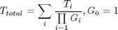

Contents
TunerClass
Parent class: BlockClass. Aggregate class of RF/analog block to create behavioral RF tuner models.
Inherited Properties
- Architecture - RF tuner architecture.
- Signal -output signal of the RF tuner.
- Zin - antenna impedance, default value 50 Ohm.
- Zout - receiver output impedance, default value INF.
- Name - name of the object.
Methods
Inherited methods
BlockClass * add * getstructure * gain
TunerClass@TunerClass
OBJ=TunerClass(NAME);
Returns an object of TunerClass. NAME is written to TunerClass/Name property. Zin, Zout and Signal are initialized to 50 Ohm, INF, and SignalClass(0,0).
run@TunerClass
OBJ=run(OBJECT,INP)
Computes the output of the RF tuner to signal INP. The funtion returns an object of TunerClass with Signal property updated with the output of the RF tuner.
[OBJ,OUTP]=run(OBJECT,INP)
Computes the output of the RF tuner to signal INP. The method returns an object of TunerClass with the updated Signal property and the output signal OUTP of the RF tuner.
gain@TunerClass
Gtotal=gain(OBJECT)
Returns the equivalent gain of the RF tuner OBJECT. The equivalent gain is computed with:
where Gi are the equivalent gains of the ith RF/analog block.
EVM_IMG@TunerClass
IMGs=EVM_IMG(OBJECT)
Returns the equivalent error vector magnitude caused by the image suppression of the RF tuner OBJECT. The equivalent error vector magnitude due to the image suppression is computed with:
where IMGs is the equivalent image supression of the mixer RF/analog block.
temp@TunerClass
Ttotal=temp(OBJECT)
Returns the equivalent temperature of the RF tuner OBJECT. The equivalent temperature is computed with:

where Ti and Gi are the equivalent temperatures and power gains of the ith RF/analog block.
cp1@TunerClass
cp1total=CP1(OBJECT)
Returns the equivalent 1dB compression point of the RF tuner OBJECT. The equivalent 1dB compression point is computed with:
where CP1i and Gi are the equivalent compression points and gains of the ith RF/analog block.
nf@TunerClass
NF=nf(OBJECT)
Returns the overall noise figure of the RF tuner. The noise figure is computed from the equivalent temperature with the next formula:

where Ttotal is the RF tuner equivalent temperature.